use ↔ to navigate
@maxogden here
hand
crafted
artisanal
javascript

jsforcats.com
@gather
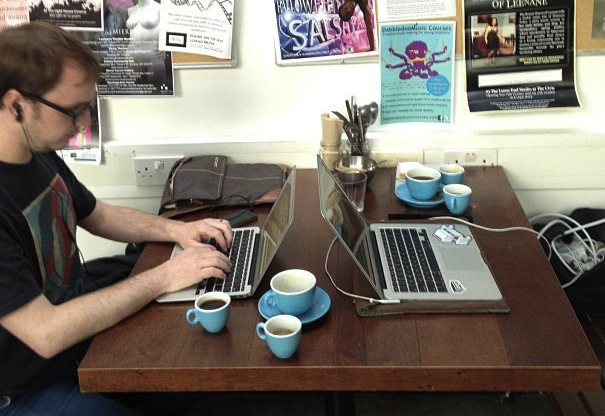2 people
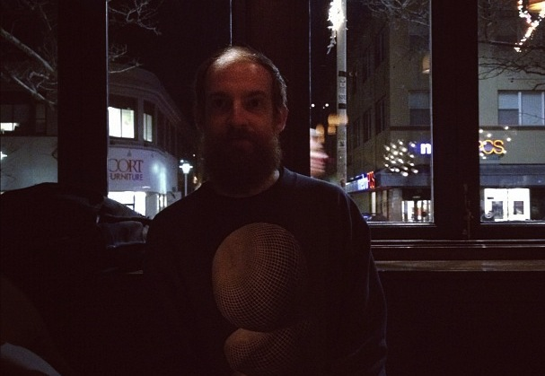@objcts
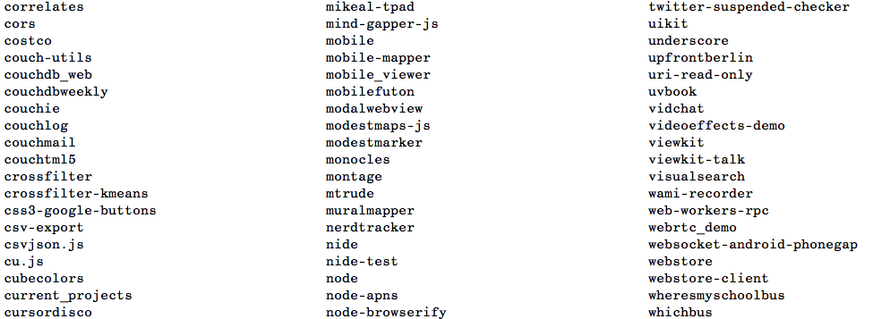168 repos
131 forks
1 high school diploma
github repos are free
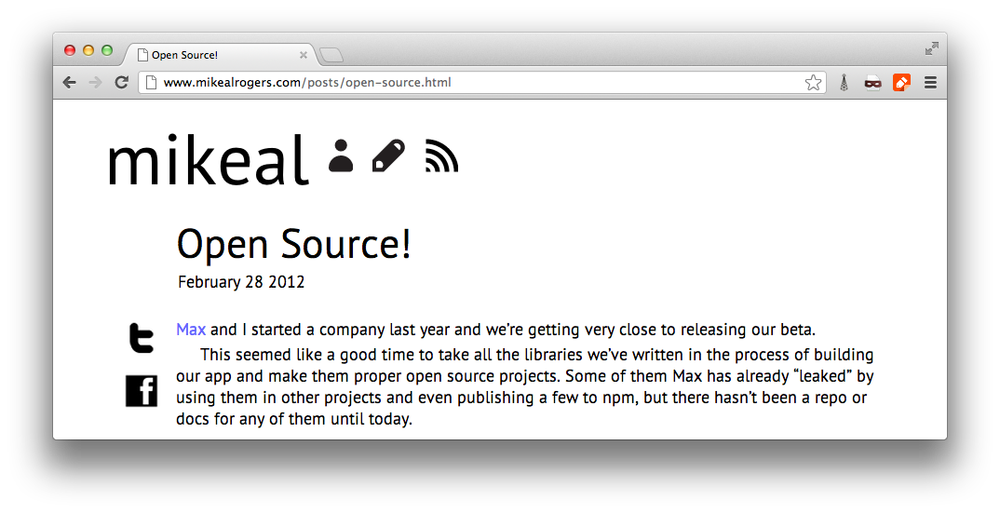~10% of these are from gather
~1 year
94% js
3% java
3% obj-c
how do we use JS
1: HTTP
JSON API
couchdb
android push notifications
OAuth
HTTP requests
twitter
facebook
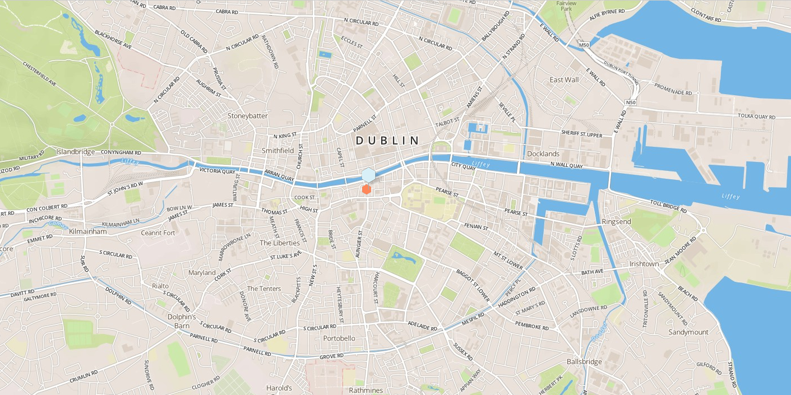maps
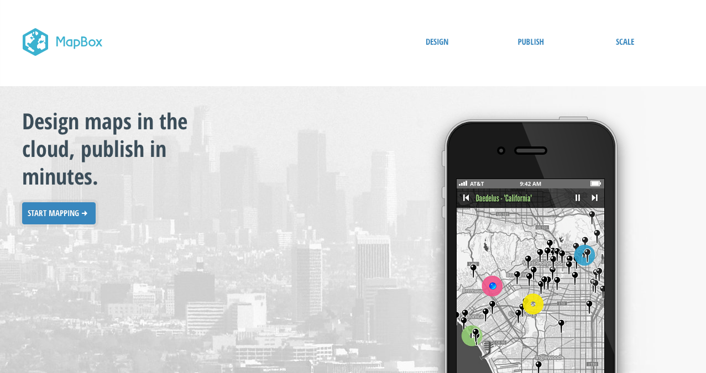mapbox
2: socket.io
websockets, http
3: map / reduce
spidermonkey in couchdb
4: TCP
apple push notifications
service registry
seaport
5: switchboard
phonegap
how don't we use JS
1. web frameworks
if we wanted one we would probably use rails
"network applications"
node isn't a web framework
it does http
it has modules
people write web frameworks with it
those things aren't always like node
fileUploadStream.pipe(io.connect('/'))
BUT
when they are, they are awesome
2 server side templates
hundreds of server side APIs
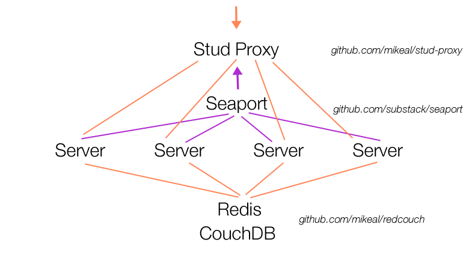
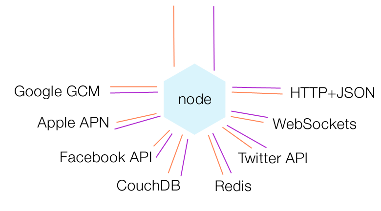
2. code reuse
pretty much no shared code
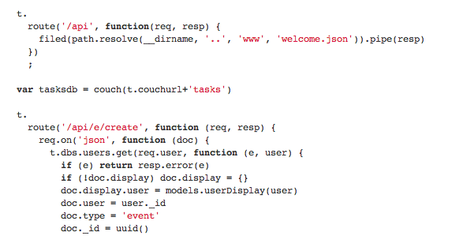
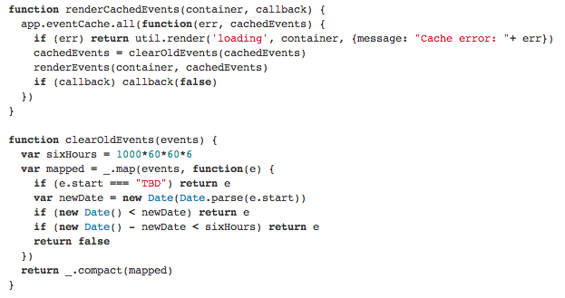
actually
we share a little
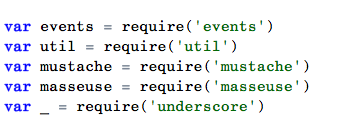
browserify
module.exports = function(){}
var pizza = require('jquery')
you got your node in my browser
but most of the time
different styles
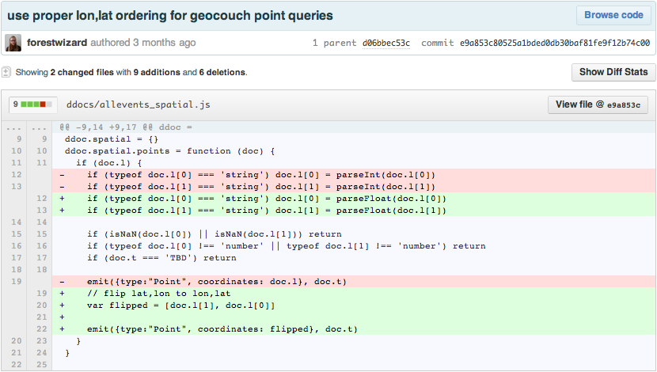
3. things that fix syntax
;
flow control
callbacks < events < streams
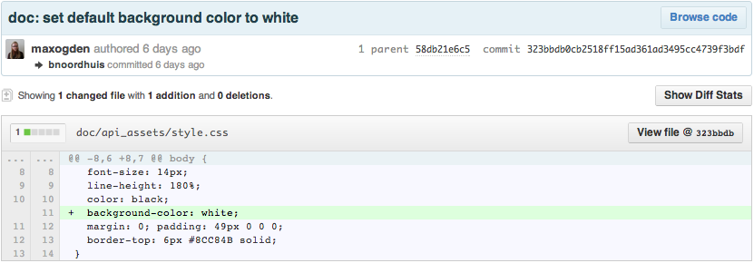
thanks
maxogden.github.com/slides